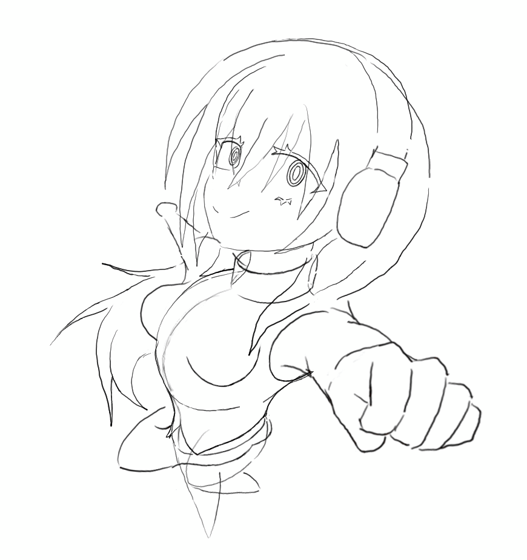
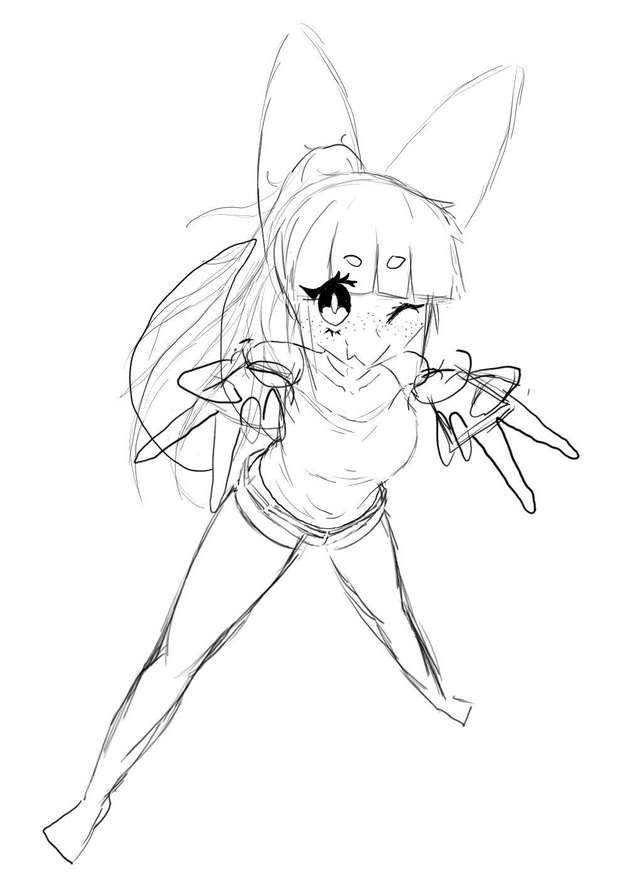
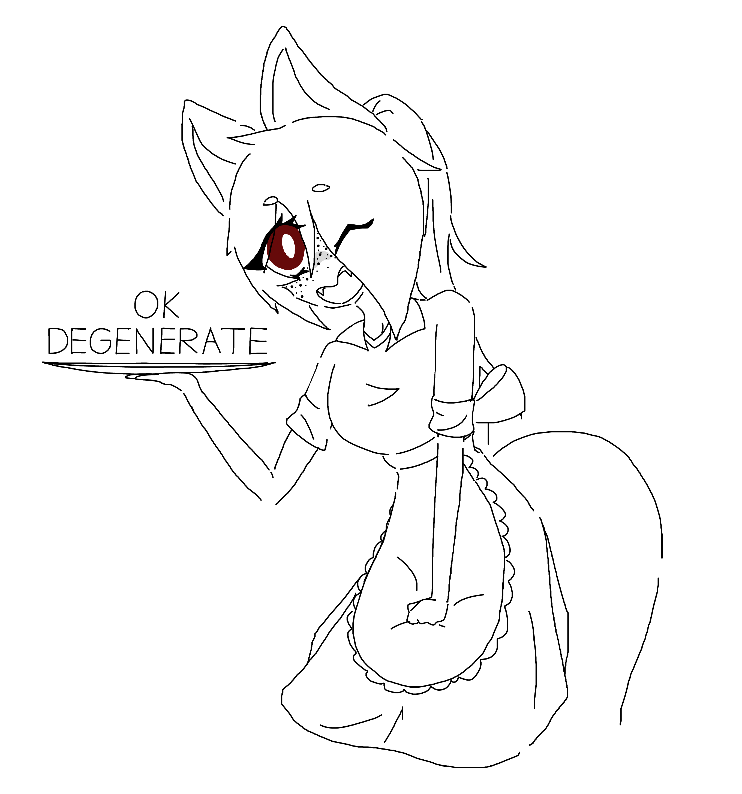

Last week I also started a different sketch (on the right) to practice weird angles. It didn't end up being as exaggerated as I'd hoped, but it at least looks kinda cohesive. It's the same character I modelled in 3D ages ago: as you can see, the design has evolved a lot! Below them both is a version of the character I did a while ago that uses the older design. It's a lot more polished, maybe my drawing skills have atrophied.
 
